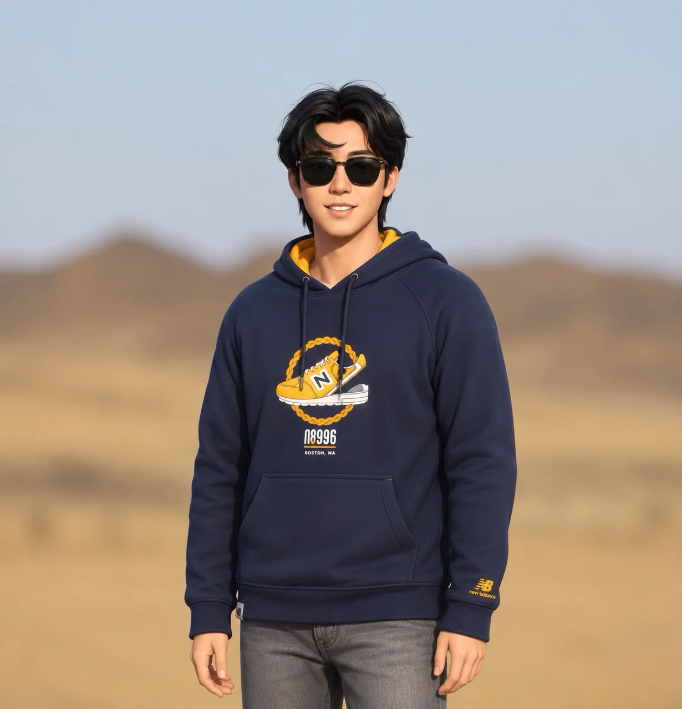
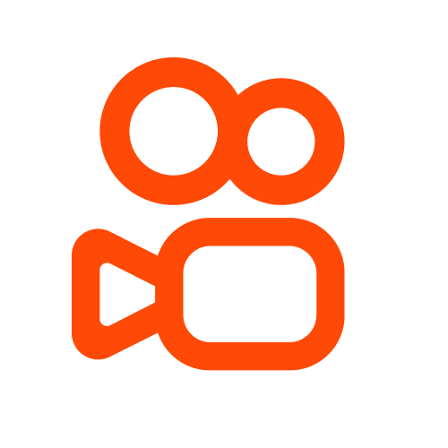
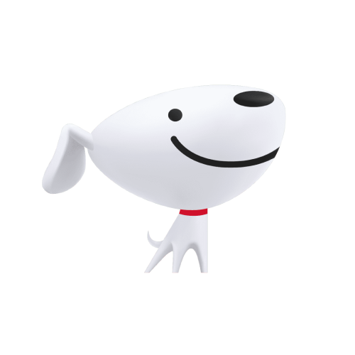
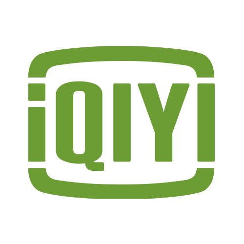

复杂 B 端设计
擅长将企业级应用场景中的复杂流程转化为清晰的信息架构与高效界面，兼顾业务目标、角色协作与操作效率。
Personal Statement

我是一名拥有 8 年经验的 UI/UX 设计师，职业经历从视觉设计逐步延展到交互设计、体验策略与企业级产品设计。相比单纯追求视觉表现，我更关注如何把复杂业务关系拆解清楚，让页面结构、操作路径和信息表达真正服务于使用效率。
在快手企业应用部，我长期负责 HR 数字化领域的核心系统体验设计，覆盖招聘、调薪奖金、人力成本、员工转正等复杂业务场景。通过业务分析、信息架构、交互设计、视觉落地和设计验收，持续推动内部系统体验统一与效率提升。
在京东阶段，我参与京麦、京粉、京东慧采、京东锦礼等多类产品设计，覆盖 PC、移动端、小程序、官网和运营活动，形成了从视觉表达、品牌设计到产品体验的综合能力。
现在我也在持续探索 AIGC、vibecoding 与企业级页面搭建 skill，希望把设计经验沉淀为可复用的规则和系统能力，让高质量 B 端页面更快、更稳定地被生成和落地。
查看作品集擅长将企业级应用场景中的复杂流程转化为清晰的信息架构与高效界面，兼顾业务目标、角色协作与操作效率。
覆盖业务理解、用户研究、交互设计、视觉设计、设计规范、组件沉淀与落地验收，可独立推进 0-1 与系统化改版项目。
关注 AIGC、vibecoding 与企业级页面搭建 skill，将设计经验结构化为规则，辅助高质量 B 端页面快速生成。

UX 设计师

视觉设计师

视觉设计师 · 实习
围绕快手人事系统高频业务场景，构建设计规范、组件体系与页面模板，搭建与业务契合度更高的 B 端设计系统。
推动十余个系统体验统一，组件覆盖率达到 90%，设计人效提升 20%-30%，显著提升跨系统协作与研发落地效率。
聚焦企业应用中的流程效率、信息组织与操作体验，将复杂业务逻辑转化为清晰、可用、易协作的产品界面设计方案。
通过系统化的信息架构与界面设计方法，提升企业内部复杂流程的可理解性与操作效率，为后续企业应用设计规范和 AI 辅助设计实践提供基础。
沉淀企业级 UI 设计方法与组件生成规则，通过结构化经验、设计模式与自动化能力，辅助快速搭建高质量 B 端页面。
将设计经验转化为可复用规则，提升 B 端页面生成效率与规范一致性，探索 AIGC 与企业级设计流程结合的落地方式。
围绕年度调薪与奖金发放流程，重构人员筛选、资源分配、预算校验与结果分析体验。
提升 HR 在复杂表格场景下的操作效率与数据判断准确性，优化多角色协作、资源分配与结果分析体验。
重构招聘系统核心工作台与面试官协作链路，梳理候选人、职位、面试与审批之间的信息关系。
提升 HR 与业务方在招聘流程中的处理效率，增强候选人信息识别、任务推进与跨角色协作体验。
参与京麦、京东慧采、京东锦礼、押宝 H5、春节礼包等多个项目，覆盖商家工具、企业采购、礼赠业务和品牌营销。
优化移动端与 PC 端核心页面的信息层级、功能入口和视觉规范，支撑营销活动与品牌物料设计。
产品设计 · 本科